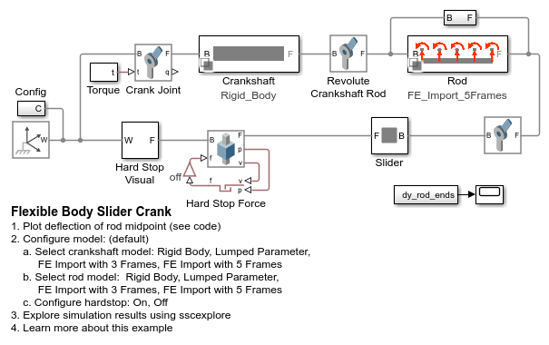
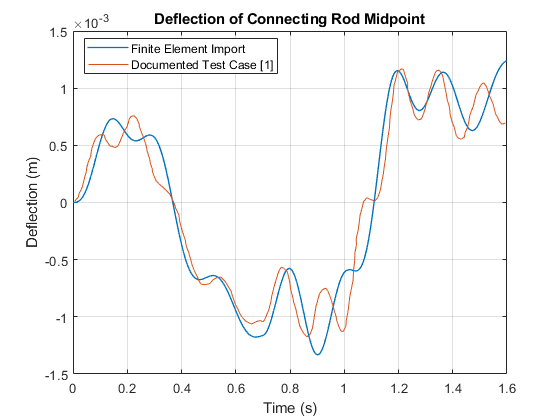
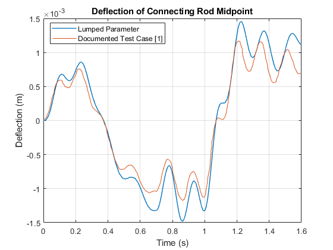
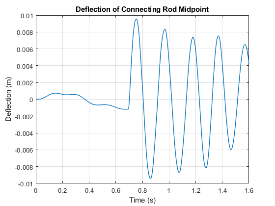

Flexible Body Slider Crank
This example shows a slider crank modeled using flexible bodies. The crankshaft and the connecting rod can each be configured to use a lumped parameter flexible beam model or to model flexibility using data imported from finite element software
Contents
Model
Results from Simscape Logging: Comparison with Literature
The plot below shows the deflection of the connecting rod midpoint relative to an imaginary line connecting the endpoints of the rod. The conditions for the simulation match a documented case that used another widely used approach for flexible multibody simulation [1]. The results match quite closely.
Test using beam modeled with data exported from finite element software
Test using beam modeled using lumped parameter method
[1] Escalona, J.L., H.A. Hussien, and A.A. Shabana. "APPLICATION OF THE ABSOLUTE NODAL CO-ORDINATE FORMULATION TO MULTIBODY SYSTEM DYNAMICS". Journal of Sound and Vibration 214.5 (1998): 833-851. Web. 26 May 2017. https://doi.org/10.1006/jsvi.1998.1563
Results from Simscape Logging: Slider Strikes Hard Stop
The plot below shows the deflection of the connecting rod midpoint relative to the ends when the slider encounters a hard stop. This test was performed with the finite import method model with 5 interface frames.
